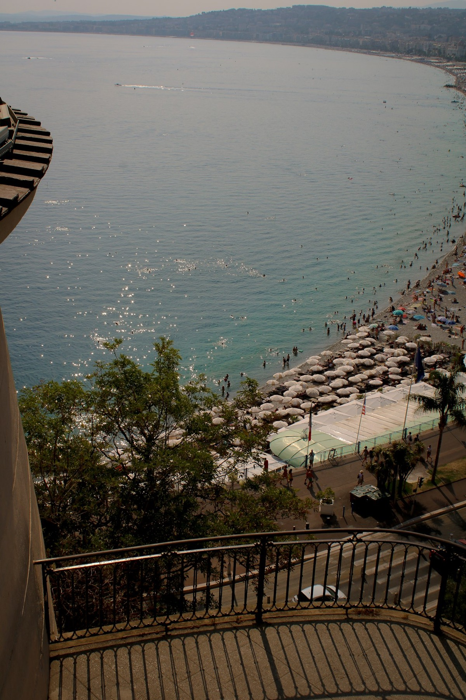
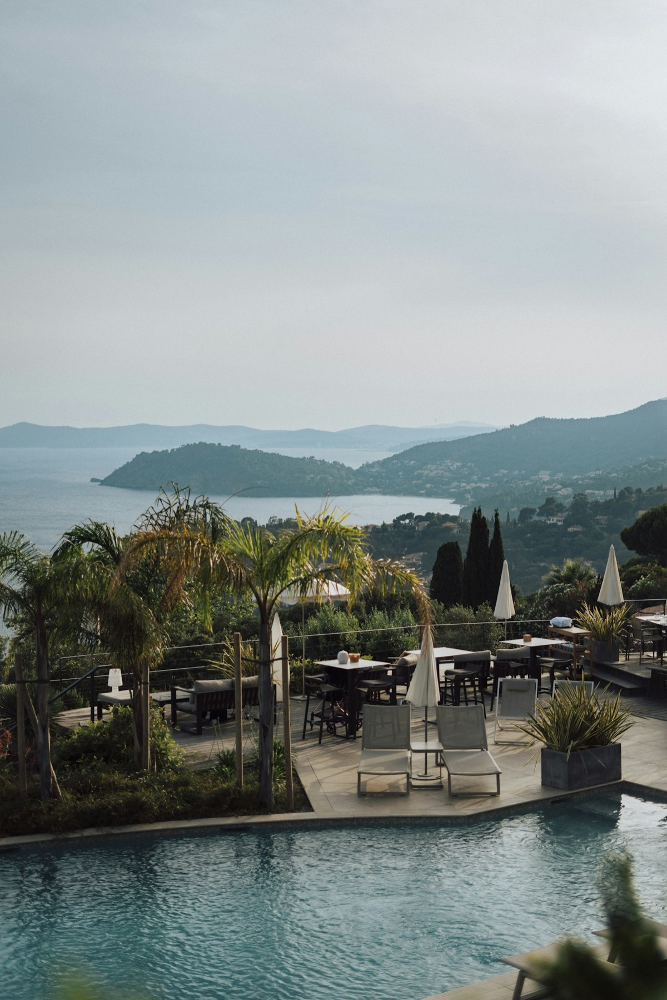
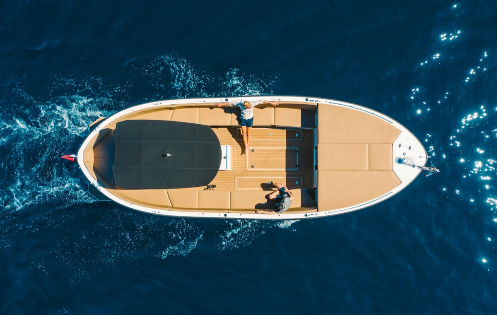
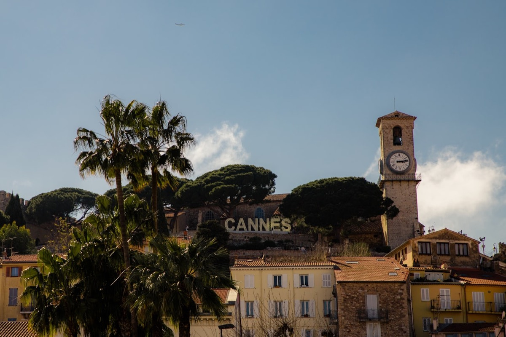

Le Palais des Festivals & la Croisette

C'est l'adresse qui dit « Cannes » sans avoir à le préciser. Le Palais des Festivals, ses marches mythiques et ses 35 000 m² d'espaces modulables, c'est la machine à congrès la plus iconique de la Côte. Conventions internationales, lancements tech, remises de prix : on y déploie aussi bien un plénier de 2 000 personnes qu'un dîner de gala face à la baie.
Mais le vrai luxe à Cannes, c'est la continuité. Du Palais, on enchaîne en cinq minutes à pied sur une plage privée de la Croisette pour la soirée. Les marques l'ont compris : on ne « réserve pas une salle », on orchestre une journée entière où le décor change sans que personne ne prenne sa voiture. Plénier le matin, déjeuner les pieds dans le sable, soirée sous les étoiles. Cannes rend ça presque facile — à condition de connaître les bons interlocuteurs.
Les villas des hauteurs

Au-dessus de la ville, sur les hauteurs de la Californie ou de Super Cannes, se cachent des villas que vous ne trouverez sur aucune brochure. Piscines à débordement, terrasses suspendues, panoramas à 180° sur la baie et les îles de Lérins. C'est le terrain des réceptions privées où l'exclusivité prime sur le volume.
Ce qu'on aime ici : l'intimité totale. Pas de passage, pas de regards indiscrets, un cadre entièrement privatisé où une marque peut dévoiler un produit ou réunir ses VIP loin de l'agitation. La contrepartie, c'est une logistique exigeante — accès en lacets, capacités traiteur à anticiper, montage millimétré. Rien d'insurmontable quand on a déjà géré dix dîners dans ces collines. C'est exactement le genre de lieu qu'on « mérite » par le carnet d'adresses, pas par un moteur de recherche.
Les yachts privatisés

Il y a les événements qui se déroulent face à la mer, et il y a ceux qui se déroulent dessus. Un yacht privatisé dans la baie de Cannes, c'est le lieu signature par excellence : celui dont vos invités parleront avant même d'être montés à bord. Cocktail au coucher du soleil, dîner au mouillage devant les îles, after sur le pont supérieur.
Le yacht impose son tempo, et c'est tout son charme : une fois les amarres larguées, le groupe est ensemble, captif au meilleur sens du terme, sans échappatoire ni distraction. Pour un comité de direction, un lancement confidentiel ou un remerciement client haut de gamme, l'effet est imparable. Côté production, tout se joue en amont : navette tender, météo marine, jauge réelle, traiteur embarqué. On ne s'improvise pas régisseur en mer — mais bien préparé, c'est l'un des formats les plus mémorables de la Riviera.
Le Suquet & le vieux Cannes

À deux pas du clinquant de la Croisette, le Suquet raconte un autre Cannes : ruelles pavées, façades ocre, la tour de l'horloge qui veille sur la colline. C'est le Cannes des marques qui cherchent l'authenticité plutôt que le bling — restaurants de caractère, places intimistes, toits-terrasses avec vue sur le port.
On y monte des dîners de presse, des soirées partenaires ou des activations lifestyle qui jouent la carte du « vrai Sud » : produits locaux, artisans de la région, lumière dorée de fin de journée. Le contraste est puissant — on quitte le tapis rouge pour entrer dans la carte postale. Et pour des invités qui croient avoir tout vu de Cannes, c'est souvent là que naît la surprise.